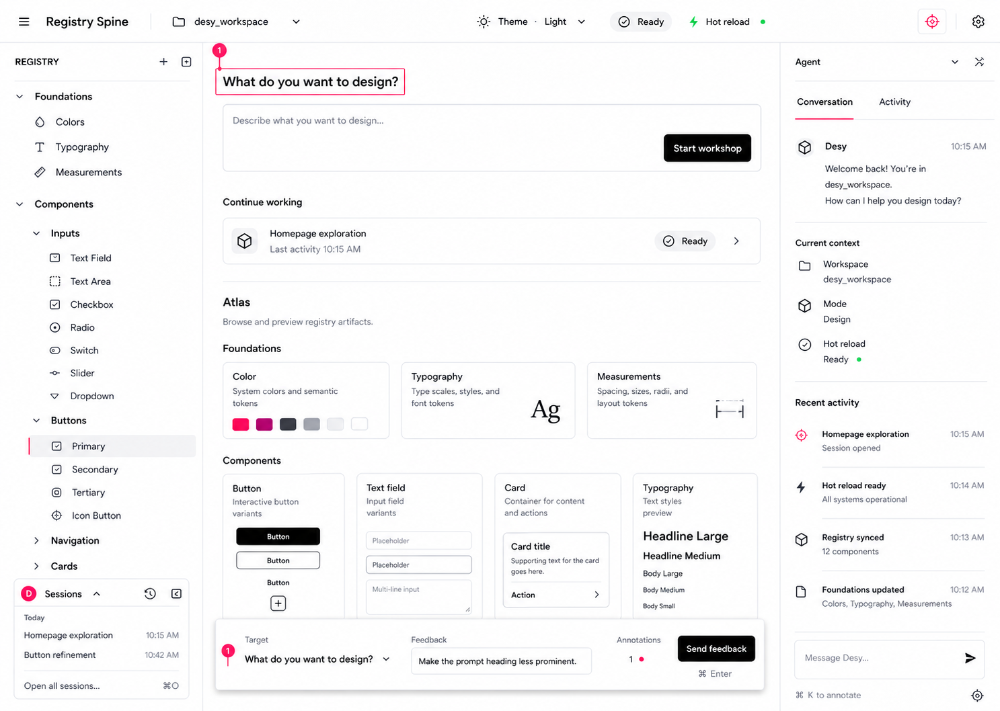
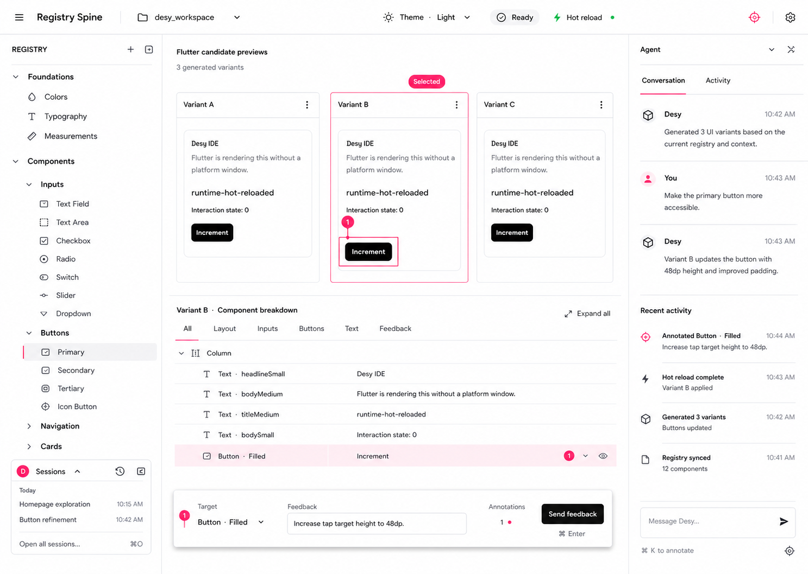

A living design system, edited at hot-reload speed.
Turn Desy into an agent-driven Flutter design workspace: the live registry stays visible in the sidebar, the center constructs and reviews real Flutter design artifacts, and every coding turn returns through hot reload. The experience should feel as immediate as an AI design tool without replacing Flutter code, the repository, or the consumer-owned design system.
See the system→Explore wide→Select a direction→Build its parts→Promote real Dart
Reason and user value
Flutter’s hot reload is exceptionally fast, but design-system work is still fragmented across source files, catalogue views, agent terminals, screenshots, and verbal feedback. Developers spend too much time explaining what already exists and navigating back to the thing being changed.
Desy can collapse that loop: show the real system, give the agent exact registry and source context, render alternatives immediately, attach feedback to visible widgets, and move the accepted result into the actual design system.
Product thesis
Desy should become the Flutter equivalent of a hot-reload AI design environment, not a generic embedded IDE. The agent may be Codex, Claude Code, or another local coding runtime. Desy owns the visual workflow and registry context; the agent remains replaceable infrastructure.
Flutter code is the medium. No JSON widget subset or proprietary DSL.
The registry is the map. No second component catalogue.
Hot reload is the feedback engine. No screenshot-only approximation.
The repository is the output. Accepted work becomes normal design-system Dart.
Core UX decision
Commit to the Registry Spine. Keep the design-system registry visible while designing. The primary sidebar lists typed foundations, component paths, components, instances, scenarios, and other registered artifacts. A compact expandable Sessions frame lives at its bottom-left edge, subordinate to registry navigation. The center is a mode-aware construction canvas, the right rail belongs to the agent conversation, and annotation is a global app tool.
Committed desktop shell
One stable frame, different center states
The shell does not rearrange itself when work begins. Registry orientation remains on the left, the agent remains on the right, and the center moves between home, Atlas inspection, and active construction. The session frame expands in place without taking canvas width.
Top barRepository, theme, runtime state, global annotation toggle.
Left spineLive registry first; compact expandable sessions at the bottom.
CenterHome, registry detail, or wide-to-deep artifact construction.
Right railConversation and structured activity for the current context.
Flutter design-system translation
The selected visual is not backed by a copyable CSS package; it is a generated concept whose language closely matches shadcn-style desktop tooling. Desy keeps Forui because Forui already supplies that neutral, token-driven Flutter foundation and is the project’s single scaffold dependency. The translation is owned by desy_design_system: white canvas and panels, 1px structural dividers, compact Roboto typography, small radii, black primary actions, green runtime health, and pink exclusively for focus, selection, inspection, and annotation.
Web-like cue
Flutter/Desy implementation
Neutral shadcn surfaces
Custom FThemeData and Desy semantic color extensions on the existing Forui foundation
CSS hairline layout
Explicit 1 logical-pixel Flutter borders between stable shell regions
Signal-pink inspector state
One Desy semantic signal token shared by focus, selection outlines, pins, and annotation surfaces
Resizable desktop panes
Flutter layout constraints and typed split-pane state, not web DOM or CSS grid
Browser-style typography density
Bundled Roboto with a compact desktop type scale and system text-scale support
Home view
Home is the beginning of work, not a metrics dashboard. It offers one prompt to start an artifact, one row to resume the latest journey, then immediately becomes the live Atlas. The registry and sessions remain visible, so starting, browsing, and resuming never require a navigation reset.

Home state · Start or resume, then browse the real registry. Annotation can target Desy chrome as well as consumer widgets.
Editor and Workshop view
The editor maximizes visible comparison without losing orientation. Candidate previews own the upper center; the selected direction’s constituent parts appear below only after a decision. The annotation dock sits over the lower center, while conversation and concise activity stay in the right rail.

Editor state · Explore wide, select one direction, drill into its parts, annotate exact widgets, and continue the same agent session.
Session frame
Anchored to the bottom of the registry sidebar.
Collapsed by default when vertical space is tight.
Shows only a short Today list and “Open all sessions.”
Opening a session restores its agent conversation and artifact context without changing the registry inventory.
Never becomes a second full-height navigation tree.
Annotation on every screen
The top-bar crosshair enables one app-wide inspection mode.
Targets may be Desy workbench controls, registry rows, Atlas entries, generated candidates, or constituent widgets.
The feedback dock is absent when nothing is selected and no notes exist.
Selecting an element opens the same bottom-center composer everywhere.
Committed notes keep source evidence and current screen or artifact context for the next agent turn.
Pink is reserved for active selection, pins, and annotation state.
Workspace anatomy
Region
Job
Source of truth
Registry sidebar
Browse, search, attach, and reopen every declared design-system artifact
The active DesyRegistry
Center workspace
Inspect an existing artifact or construct new real Flutter candidates and constituent parts
Repository Dart rendered under the active theme
Feedback layer
Select widgets, commit annotations, choose a direction, and send one structured turn
Ephemeral workshop state plus inspector evidence
Agent activity
Show planning, edits, checks, errors, and reload state without becoming a raw terminal wall
Replaceable local agent runtime
Session history
Resume design journeys and understand why the system changed
Repository-local session records when persistence is added
Scope
Keep the complete live registry available in the primary sidebar throughout the workspace.
Keep a compact expandable chat-session frame at the bottom of that sidebar.
Open any registry artifact into a central inspect, modify, or compose mode.
Start a new artifact from a prompt, an existing registry entry, or a group of attached entries.
Compare real Flutter candidates under the active consumer theme.
Use the wide-to-deep flow: alternatives first, one selected direction second, constituent components third.
Resolve existing parts through registry IDs and knob-aware builders rather than copying them.
Annotate exact visible widgets and submit annotations with the next coding turn.
Expose the same annotation tool on Home, Atlas, detail, and Workshop surfaces.
Promote accepted parts into consumer-owned source, registry declarations, scenarios, and focused tests.
Support replaceable local coding-agent runtimes behind one Workshop interface.
Non-goals
No general-purpose IDE, source browser, debugger, or shell product.
No drag-and-drop replacement for Flutter layout code.
No parallel workshop catalogue, copied registry metadata, or serialized widget callbacks.
No automatic production promotion without an explicit user decision.
No application business-logic or platform-integration workshop in the initial product.
No agent-vendor lock-in or product identity built around one CLI.
No hosted compilation, accounts, or multiplayer requirement for the local-first release.
No claim that automated checks can decide subjective design quality.
What can be constructed
Artifact
Center experience
Accepted output
Component
Explore several implementations, select one, then expose and refine its constituent parts
Production widget, contract, instances, source path, and registry entry
Composition or screen
Compose registered components with new glue widgets under real responsive constraints
Normal consumer-owned Flutter screen or showcase
Component state or scenario
Construct meaningful empty, loading, error, content, and interaction states
Typed scenario and focused test coverage
Typed foundation
Review a proposed color, typography, measurement, motion, or effect in representative widgets
Consumer-owned token plus the matching typed registry lane declaration
Review evidence
Annotate exact widgets and compare the hot-reloaded result against the request
Structured feedback, verification receipt, or golden candidate
These are all real Flutter and design-system artifacts. Desy coordinates their construction; it does not invent a universal intermediate UI language.
Component drill-down must remain hidden until a direction is decided. Before selection, the goal is breadth. After selection, the agent removes rejected implementations and works only on the chosen artifact and the parts required to make it production-ready. Existing parts are labeled and resolved from the registry; only genuinely new parts remain prototypes.
Smallest useful flow
Open Desy and keep the registry sidebar visible.
Select an existing component or ask for a new one.
The agent writes three ordinary Dart candidates.
Flutter hot reload displays them in the center.
Select widgets, add feedback, and choose one candidate.
The next turn deletes rejected candidates and shows the chosen candidate’s parts below it.
Registry parts render through stable instance IDs; new parts remain explicit prototypes.
Accept one part or the complete component into the real consumer design system.
Implementation sketch
Promote the current Workshop from a standalone destination into a central workbench mode hosted beside the existing registry navigation.
Keep DesyBenchApp and its app-wide registry context authoritative; the workspace receives only the same read-only registry and active theme.
Represent workspace focus with typed artifact references: registry ID, instance or scenario ID, theme, viewport, and source evidence.
Lift inspection and annotation ownership to the workbench shell so every routed screen can contribute source-aware targets to one feedback dock.
Keep candidate and constituent-component declarations in ordinary hot-reloadable Dart. Registry-backed parts store only stable instance IDs and resolve through registry.widgetBuilder.
Define a replaceable agent-runtime interface for resumable turns, cancellation, structured activity, file changes, and reload requests.
Give promotion an explicit transaction: selected prototype, destination source, registry declaration changes, tests, and a reviewable diff.
Add conformance and golden checks after the core loop is usable; report evidence without blocking subjective human review.
Product boundaries
The sidebar is derived from the registry, never maintained by the agent.
The center may temporarily hold prototypes, but accepted artifacts move into consumer-owned source.
Agent prompts may reference source and registry contracts but cannot silently redefine them.
Hot reload updates visible work; it does not itself imply acceptance.
A session records the journey, while Git remains the durable truth for code.
Rollout phases
Unify: keep registry navigation visible around the current hot-reload Workshop.
Construct: support the wide-to-deep candidate and component-part loop.
Promote: move accepted prototypes into real components, declarations, and tests.
Verify: attach analyzer, conformance, scenario, and golden evidence.
Remember: persist repository-local journeys and resumable agent sessions.
Share later: evaluate hosted rendering and collaboration only after local daily use proves the workflow.
Acceptance criteria
The registry sidebar remains usable while a design artifact is being constructed.
The compact session frame can resume a conversation without replacing or duplicating registry navigation.
Every visible existing part resolves from the live registry and is labeled as registered.
Every candidate and new constituent part is real Flutter code under the active consumer theme.
Component drill-down is absent during broad exploration and appears only after exactly one direction is selected.
The next agent turn removes rejected implementation code instead of accumulating a permanent prototype graveyard.
A user can annotate a visible widget and see that exact source-aware feedback in the next turn.
The same annotation toggle and feedback dock work on Home, Atlas, detail, and Workshop screens.
Promotion produces an ordinary reviewable repository diff, including registry and focused test changes when required.
Changing the coding-agent runtime does not change the registry or artifact model.
Open questions
Should selecting a sidebar artifact open inspect mode first, or preserve the last inspect/workshop mode per artifact?
What explicit action separates “continue prototyping” from “promote into the design system”?
Should promotion update the registry automatically after presenting a diff, or ask the agent to propose the declaration?
Which non-widget artifacts are valuable enough for the first construction modes: scenarios, tokens, motion, or effects?
How should multiple simultaneous workshop sessions communicate file ownership and avoid conflicting edits?
How many recent sessions fit in the compact frame before “Open all sessions” becomes the only useful action?
Which structured runtime events can Codex and Claude Code both provide without reducing the interface to raw terminal text?
Do or don’t?
Do, but converge existing primitives before expanding artifact types. Impact 5/5, complexity 5/5, risk 3/5, yield 1.00. Desy already proves important technical pieces, but the remaining product risk is coherence: a stable multi-region workspace, state transitions, keyboard behavior, responsive layout, and a dependable daily interaction model. First keep the registry visible around the current component Workshop and prove explicit promotion. Defer hosted rendering, multiplayer, and broad IDE ambitions.